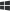

Installed Keyboards
Settings
Updates
KeyMagic 3
Version Loading...
KeyMagic Language Settings
Manage which languages KeyMagic appears under in Windows language settings.
Enabled Languages
KeyMagic will be available as an input method for these languages. Changes may require administrator privileges.
KeyMagic appears as a keyboard option in your Windows keyboard layouts list. To activate or deactivate KeyMagic, simply switch between input methods using the system tray menu or the  +Spacebar keyboard shortcut.
To switch between different KeyMagic keyboards, use KeyMagic tray menu or keyboard-specific hotkeys configured in the Keyboards page.
Composition Mode
Configure which applications use composition mode (text appears with underline while typing) instead of direct mode.
Applications
These applications will show text with an underline while typing. All other applications will use direct text input.
Create KeyMagic Keyboard
Build from KeyMagic Script
Convert KeyMagic Script (.kms) files to binary keyboard (.km2) format.
About KeyMagic Files
KMS (KeyMagic Keyboard Layout Script) files are text-based keyboard layout definitions written in a human-readable scripting language. They use simple syntax to define how keystrokes are transformed into characters, making it easy to create and modify keyboard layouts for various languages and writing systems.
KM2 (KeyMagic Keyboard Layout Binary) files are the compiled version of KMS scripts. The compiler validates syntax, optimizes rules for fast pattern matching, and packages everything—including icons and resources—into a single binary file that KeyMagic loads at runtime.